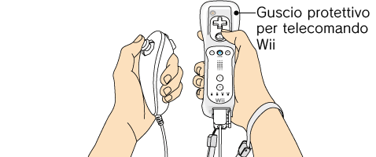
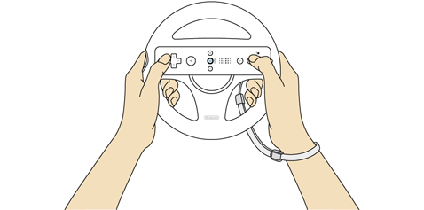
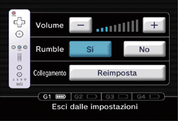

4 |
Uso del controller |
 |
Ci sono diversi modi per impugnare il telecomando Wii ed essi variano a seconda che lo si usi da solo o insieme ad altri accessori.

 Uso del telecomando Wii Nota: consulta sempre il manuale di istruzioni del controller che stai utilizzando.

Uso del Wii Wheel
Nota: consulta sempre il manuale di istruzioni del controller che stai utilizzando.


Nota: se il laccetto che stai utilizzando presenta una levetta, assicurati che questa sia in posizione di chiusura. In questo modo eviterai che il laccetto si allenti.
Questa procedura permette al telecomando Wii di comunicare con la console.
Vi sono due diverse procedure di sincronizzazione.
Sincronizzazione standard – La sincronizzazione standard viene utilizzata per sincronizzare telecomandi Wii aggiuntivi con la console Wii o per risincronizzare il telecomando Wii fornito con la console. Il telecomando Wii rimarrà sincronizzato con la console iniziale fino a quando non si esegue una nuova sincronizzazione standard con una console diversa.
Sincronizzazione temporanea – Questa procedura ti permette di usare temporaneamente il telecomando con una console diversa oppure di usare il telecomando di un altro giocatore sulla tua console. Questa procedura non ha alcun effetto sulle impostazioni relative alla sincronizzazione standard del telecomando Wii. Il telecomando Wii sarà in grado di comunicare con la console solamente finché i due dispositivi sono accesi: una volta spenti, la sincronizzazione temporanea verrà annullata.
Nota: la console Wii può essere accesa e spenta solo con un telecomando Wii sincronizzato tramite sincronizzazione standard.
Nota: assicurati che le batterie siano inserite nel telecomando Wii prima di eseguire la procedura.
Sincronizzazione standard

Segui questa procedura per ogni telecomando Wii che vuoi sincronizzare con la console.
Sincronizzazione temporanea
Nota: quando esegui questa procedura, le impostazioni della sincronizzazione standard vengono temporaneamente disattivate fino a quando non spegni la console. Quando riaccendi la console, verrà ripristinata la sincronizzazione standard.


IMPORTANTE:
• Se il telecomando Wii perde la sincronizzazione con la console Wii e non riesci a ripristinarla, consulta il capitolo "Sincronizzare il telecomando con la console Wii" del manuale di istruzioni della console Wii: installazione. • Non tenere premuto
Se i pulsanti o gli stick di un Nunchuk all’accensione della console o durante il collegamento con il telecomando Wii, non si trovano nella posizione neutra (*), il controller non funzionerà in maniera corretta. Segui queste istruzioni per registrare nuovamente la posizione neutra:
* Per “posizione neutra” si intende la posizione dei pulsanti quando non vengono premuti e degli stick quando non vengono inclinati (vedi le immagini sottostanti).
|
 su un telecomando Wii sincronizzato con la console.
su un telecomando Wii sincronizzato con la console. e
e  sui telecomandi che vuoi sincronizzare con la console. L’ordine con cui sincronizzi i telecomandi Wii corrisponde all’ordine dei giocatori nelle partite a più giocatori.
sui telecomandi che vuoi sincronizzare con la console. L’ordine con cui sincronizzi i telecomandi Wii corrisponde all’ordine dei giocatori nelle partite a più giocatori.
 ,
,  ,
,  e
e  sul telecomando Wii per circa tre secondi.
sul telecomando Wii per circa tre secondi.

 |
 |
 |